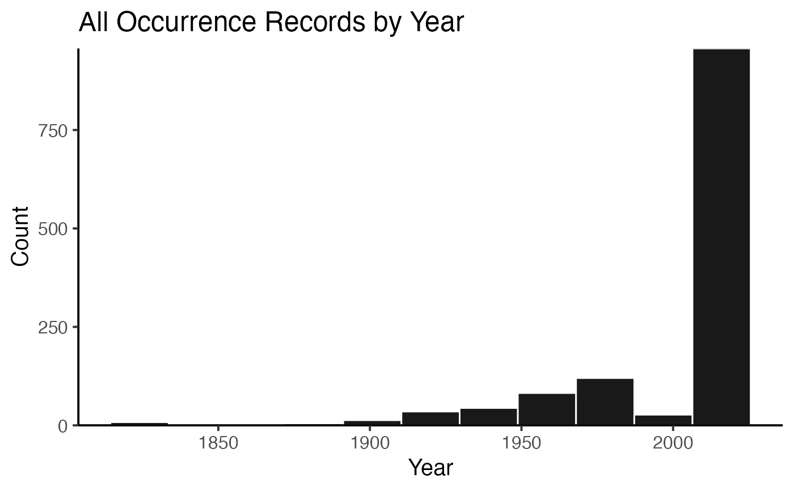
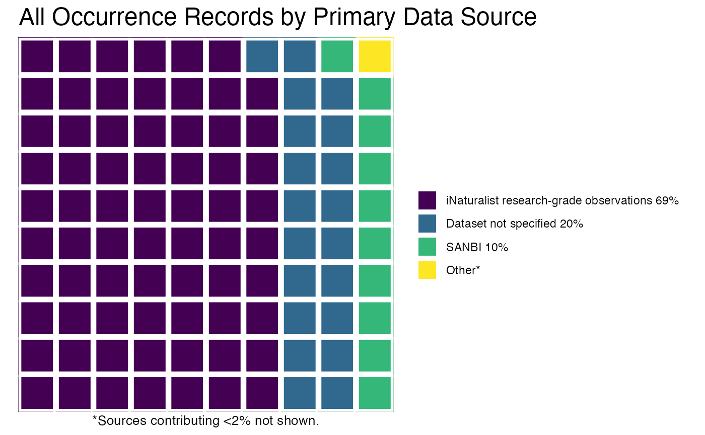
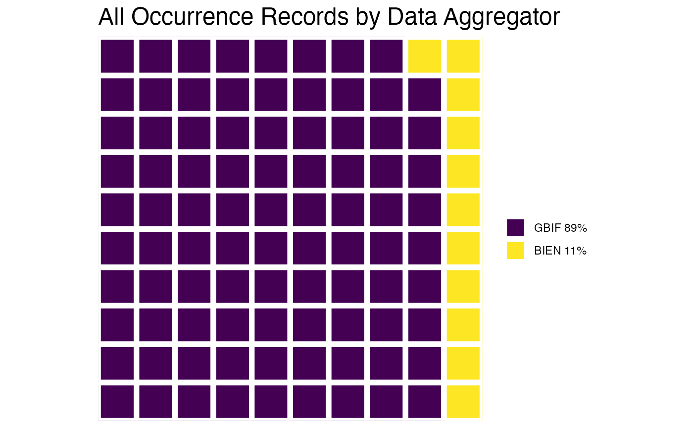

R/occCite_plotting.R
plot.occCiteData.RdGenerates up to three different kinds of plots, with toggles determining whether plots should be done for individual species or aggregating all species--histogram by year of occurrence records, waffle::waffle plot of primary data sources, waffle::waffle plot of data aggregators.
# S3 method for occCiteData plot(x, ...)
| x | An object of class |
|---|---|
| ... | Additional arguments affecting how the formatted
citation document is produced.
|
A list containing the desired plots.
data(myOccCiteObject) plot( x = myOccCiteObject, bySpecies = FALSE, plotTypes = c("yearHistogram", "source", "aggregator") )#> $yearHistogram #> $data #> $data[[1]] #> y count x xmin xmax density ncount ndensity #> 1 8 8 1824.0 1814.4 1833.6 0.000322248 0.008359457 0.008359457 #> 2 0 0 1843.2 1833.6 1852.8 0.000000000 0.000000000 0.000000000 #> 3 2 2 1862.4 1852.8 1872.0 0.000080562 0.002089864 0.002089864 #> 4 5 5 1881.6 1872.0 1891.2 0.000201405 0.005224660 0.005224660 #> 5 13 13 1900.8 1891.2 1910.4 0.000523653 0.013584117 0.013584117 #> 6 35 35 1920.0 1910.4 1929.6 0.001409835 0.036572623 0.036572623 #> 7 44 44 1939.2 1929.6 1948.8 0.001772364 0.045977011 0.045977011 #> 8 82 82 1958.4 1948.8 1968.0 0.003303042 0.085684431 0.085684431 #> 9 120 120 1977.6 1968.0 1987.2 0.004833720 0.125391850 0.125391850 #> 10 27 27 1996.8 1987.2 2006.4 0.001087587 0.028213166 0.028213166 #> 11 957 957 2016.0 2006.4 2025.6 0.038548917 1.000000000 1.000000000 #> flipped_aes PANEL group ymin ymax colour fill size linetype alpha #> 1 FALSE 1 -1 0 8 white black 0.5 1 0.9 #> 2 FALSE 1 -1 0 0 white black 0.5 1 0.9 #> 3 FALSE 1 -1 0 2 white black 0.5 1 0.9 #> 4 FALSE 1 -1 0 5 white black 0.5 1 0.9 #> 5 FALSE 1 -1 0 13 white black 0.5 1 0.9 #> 6 FALSE 1 -1 0 35 white black 0.5 1 0.9 #> 7 FALSE 1 -1 0 44 white black 0.5 1 0.9 #> 8 FALSE 1 -1 0 82 white black 0.5 1 0.9 #> 9 FALSE 1 -1 0 120 white black 0.5 1 0.9 #> 10 FALSE 1 -1 0 27 white black 0.5 1 0.9 #> 11 FALSE 1 -1 0 957 white black 0.5 1 0.9 #> #> #> $layout #> <ggproto object: Class Layout, gg> #> coord: <ggproto object: Class CoordCartesian, Coord, gg> #> aspect: function #> backtransform_range: function #> clip: on #> default: TRUE #> distance: function #> expand: TRUE #> is_free: function #> is_linear: function #> labels: function #> limits: list #> modify_scales: function #> range: function #> render_axis_h: function #> render_axis_v: function #> render_bg: function #> render_fg: function #> setup_data: function #> setup_layout: function #> setup_panel_guides: function #> setup_panel_params: function #> setup_params: function #> train_panel_guides: function #> transform: function #> super: <ggproto object: Class CoordCartesian, Coord, gg> #> coord_params: list #> facet: <ggproto object: Class FacetNull, Facet, gg> #> compute_layout: function #> draw_back: function #> draw_front: function #> draw_labels: function #> draw_panels: function #> finish_data: function #> init_scales: function #> map_data: function #> params: list #> setup_data: function #> setup_params: function #> shrink: TRUE #> train_scales: function #> vars: function #> super: <ggproto object: Class FacetNull, Facet, gg> #> facet_params: list #> finish_data: function #> get_scales: function #> layout: data.frame #> map_position: function #> panel_params: list #> panel_scales_x: list #> panel_scales_y: list #> render: function #> render_labels: function #> reset_scales: function #> setup: function #> setup_panel_guides: function #> setup_panel_params: function #> train_position: function #> xlabel: function #> ylabel: function #> super: <ggproto object: Class Layout, gg> #> #> $plot#> #> attr(,"class") #> [1] "ggplot_built" #> #> $source #> $data #> $data[[1]] #> fill x y PANEL group xmin xmax ymin ymax colour size linetype alpha #> 1 #440154FF 1 1 1 1 0.5 1.5 0.5 1.5 white 2 1 NA #> 2 #440154FF 1 2 1 1 0.5 1.5 1.5 2.5 white 2 1 NA #> 3 #440154FF 1 3 1 1 0.5 1.5 2.5 3.5 white 2 1 NA #> 4 #440154FF 1 4 1 1 0.5 1.5 3.5 4.5 white 2 1 NA #> 5 #440154FF 1 5 1 1 0.5 1.5 4.5 5.5 white 2 1 NA #> 6 #440154FF 1 6 1 1 0.5 1.5 5.5 6.5 white 2 1 NA #> 7 #440154FF 1 7 1 1 0.5 1.5 6.5 7.5 white 2 1 NA #> 8 #440154FF 1 8 1 1 0.5 1.5 7.5 8.5 white 2 1 NA #> 9 #440154FF 1 9 1 1 0.5 1.5 8.5 9.5 white 2 1 NA #> 10 #440154FF 1 10 1 1 0.5 1.5 9.5 10.5 white 2 1 NA #> 11 #440154FF 2 1 1 1 1.5 2.5 0.5 1.5 white 2 1 NA #> 12 #440154FF 2 2 1 1 1.5 2.5 1.5 2.5 white 2 1 NA #> 13 #440154FF 2 3 1 1 1.5 2.5 2.5 3.5 white 2 1 NA #> 14 #440154FF 2 4 1 1 1.5 2.5 3.5 4.5 white 2 1 NA #> 15 #440154FF 2 5 1 1 1.5 2.5 4.5 5.5 white 2 1 NA #> 16 #440154FF 2 6 1 1 1.5 2.5 5.5 6.5 white 2 1 NA #> 17 #440154FF 2 7 1 1 1.5 2.5 6.5 7.5 white 2 1 NA #> 18 #440154FF 2 8 1 1 1.5 2.5 7.5 8.5 white 2 1 NA #> 19 #440154FF 2 9 1 1 1.5 2.5 8.5 9.5 white 2 1 NA #> 20 #440154FF 2 10 1 1 1.5 2.5 9.5 10.5 white 2 1 NA #> 21 #440154FF 3 1 1 1 2.5 3.5 0.5 1.5 white 2 1 NA #> 22 #440154FF 3 2 1 1 2.5 3.5 1.5 2.5 white 2 1 NA #> 23 #440154FF 3 3 1 1 2.5 3.5 2.5 3.5 white 2 1 NA #> 24 #440154FF 3 4 1 1 2.5 3.5 3.5 4.5 white 2 1 NA #> 25 #440154FF 3 5 1 1 2.5 3.5 4.5 5.5 white 2 1 NA #> 26 #440154FF 3 6 1 1 2.5 3.5 5.5 6.5 white 2 1 NA #> 27 #440154FF 3 7 1 1 2.5 3.5 6.5 7.5 white 2 1 NA #> 28 #440154FF 3 8 1 1 2.5 3.5 7.5 8.5 white 2 1 NA #> 29 #440154FF 3 9 1 1 2.5 3.5 8.5 9.5 white 2 1 NA #> 30 #440154FF 3 10 1 1 2.5 3.5 9.5 10.5 white 2 1 NA #> 31 #440154FF 4 1 1 1 3.5 4.5 0.5 1.5 white 2 1 NA #> 32 #440154FF 4 2 1 1 3.5 4.5 1.5 2.5 white 2 1 NA #> 33 #440154FF 4 3 1 1 3.5 4.5 2.5 3.5 white 2 1 NA #> 34 #440154FF 4 4 1 1 3.5 4.5 3.5 4.5 white 2 1 NA #> 35 #440154FF 4 5 1 1 3.5 4.5 4.5 5.5 white 2 1 NA #> 36 #440154FF 4 6 1 1 3.5 4.5 5.5 6.5 white 2 1 NA #> 37 #440154FF 4 7 1 1 3.5 4.5 6.5 7.5 white 2 1 NA #> 38 #440154FF 4 8 1 1 3.5 4.5 7.5 8.5 white 2 1 NA #> 39 #440154FF 4 9 1 1 3.5 4.5 8.5 9.5 white 2 1 NA #> 40 #440154FF 4 10 1 1 3.5 4.5 9.5 10.5 white 2 1 NA #> 41 #440154FF 5 1 1 1 4.5 5.5 0.5 1.5 white 2 1 NA #> 42 #440154FF 5 2 1 1 4.5 5.5 1.5 2.5 white 2 1 NA #> 43 #440154FF 5 3 1 1 4.5 5.5 2.5 3.5 white 2 1 NA #> 44 #440154FF 5 4 1 1 4.5 5.5 3.5 4.5 white 2 1 NA #> 45 #440154FF 5 5 1 1 4.5 5.5 4.5 5.5 white 2 1 NA #> 46 #440154FF 5 6 1 1 4.5 5.5 5.5 6.5 white 2 1 NA #> 47 #440154FF 5 7 1 1 4.5 5.5 6.5 7.5 white 2 1 NA #> 48 #440154FF 5 8 1 1 4.5 5.5 7.5 8.5 white 2 1 NA #> 49 #440154FF 5 9 1 1 4.5 5.5 8.5 9.5 white 2 1 NA #> 50 #440154FF 5 10 1 1 4.5 5.5 9.5 10.5 white 2 1 NA #> 51 #440154FF 6 1 1 1 5.5 6.5 0.5 1.5 white 2 1 NA #> 52 #440154FF 6 2 1 1 5.5 6.5 1.5 2.5 white 2 1 NA #> 53 #440154FF 6 3 1 1 5.5 6.5 2.5 3.5 white 2 1 NA #> 54 #440154FF 6 4 1 1 5.5 6.5 3.5 4.5 white 2 1 NA #> 55 #440154FF 6 5 1 1 5.5 6.5 4.5 5.5 white 2 1 NA #> 56 #440154FF 6 6 1 1 5.5 6.5 5.5 6.5 white 2 1 NA #> 57 #440154FF 6 7 1 1 5.5 6.5 6.5 7.5 white 2 1 NA #> 58 #440154FF 6 8 1 1 5.5 6.5 7.5 8.5 white 2 1 NA #> 59 #440154FF 6 9 1 1 5.5 6.5 8.5 9.5 white 2 1 NA #> 60 #440154FF 6 10 1 1 5.5 6.5 9.5 10.5 white 2 1 NA #> 61 #440154FF 7 1 1 1 6.5 7.5 0.5 1.5 white 2 1 NA #> 62 #440154FF 7 2 1 1 6.5 7.5 1.5 2.5 white 2 1 NA #> 63 #440154FF 7 3 1 1 6.5 7.5 2.5 3.5 white 2 1 NA #> 64 #440154FF 7 4 1 1 6.5 7.5 3.5 4.5 white 2 1 NA #> 65 #440154FF 7 5 1 1 6.5 7.5 4.5 5.5 white 2 1 NA #> 66 #440154FF 7 6 1 1 6.5 7.5 5.5 6.5 white 2 1 NA #> 67 #440154FF 7 7 1 1 6.5 7.5 6.5 7.5 white 2 1 NA #> 68 #440154FF 7 8 1 1 6.5 7.5 7.5 8.5 white 2 1 NA #> 69 #440154FF 7 9 1 1 6.5 7.5 8.5 9.5 white 2 1 NA #> 70 #31688EFF 7 10 1 2 6.5 7.5 9.5 10.5 white 2 1 NA #> 71 #31688EFF 8 1 1 2 7.5 8.5 0.5 1.5 white 2 1 NA #> 72 #31688EFF 8 2 1 2 7.5 8.5 1.5 2.5 white 2 1 NA #> 73 #31688EFF 8 3 1 2 7.5 8.5 2.5 3.5 white 2 1 NA #> 74 #31688EFF 8 4 1 2 7.5 8.5 3.5 4.5 white 2 1 NA #> 75 #31688EFF 8 5 1 2 7.5 8.5 4.5 5.5 white 2 1 NA #> 76 #31688EFF 8 6 1 2 7.5 8.5 5.5 6.5 white 2 1 NA #> 77 #31688EFF 8 7 1 2 7.5 8.5 6.5 7.5 white 2 1 NA #> 78 #31688EFF 8 8 1 2 7.5 8.5 7.5 8.5 white 2 1 NA #> 79 #31688EFF 8 9 1 2 7.5 8.5 8.5 9.5 white 2 1 NA #> 80 #31688EFF 8 10 1 2 7.5 8.5 9.5 10.5 white 2 1 NA #> 81 #31688EFF 9 1 1 2 8.5 9.5 0.5 1.5 white 2 1 NA #> 82 #31688EFF 9 2 1 2 8.5 9.5 1.5 2.5 white 2 1 NA #> 83 #31688EFF 9 3 1 2 8.5 9.5 2.5 3.5 white 2 1 NA #> 84 #31688EFF 9 4 1 2 8.5 9.5 3.5 4.5 white 2 1 NA #> 85 #31688EFF 9 5 1 2 8.5 9.5 4.5 5.5 white 2 1 NA #> 86 #31688EFF 9 6 1 2 8.5 9.5 5.5 6.5 white 2 1 NA #> 87 #31688EFF 9 7 1 2 8.5 9.5 6.5 7.5 white 2 1 NA #> 88 #31688EFF 9 8 1 2 8.5 9.5 7.5 8.5 white 2 1 NA #> 89 #31688EFF 9 9 1 2 8.5 9.5 8.5 9.5 white 2 1 NA #> 90 #35B779FF 9 10 1 3 8.5 9.5 9.5 10.5 white 2 1 NA #> 91 #35B779FF 10 1 1 3 9.5 10.5 0.5 1.5 white 2 1 NA #> 92 #35B779FF 10 2 1 3 9.5 10.5 1.5 2.5 white 2 1 NA #> 93 #35B779FF 10 3 1 3 9.5 10.5 2.5 3.5 white 2 1 NA #> 94 #35B779FF 10 4 1 3 9.5 10.5 3.5 4.5 white 2 1 NA #> 95 #35B779FF 10 5 1 3 9.5 10.5 4.5 5.5 white 2 1 NA #> 96 #35B779FF 10 6 1 3 9.5 10.5 5.5 6.5 white 2 1 NA #> 97 #35B779FF 10 7 1 3 9.5 10.5 6.5 7.5 white 2 1 NA #> 98 #35B779FF 10 8 1 3 9.5 10.5 7.5 8.5 white 2 1 NA #> 99 #35B779FF 10 9 1 3 9.5 10.5 8.5 9.5 white 2 1 NA #> 100 #FDE725FF 10 10 1 4 9.5 10.5 9.5 10.5 white 2 1 NA #> width height #> 1 NA NA #> 2 NA NA #> 3 NA NA #> 4 NA NA #> 5 NA NA #> 6 NA NA #> 7 NA NA #> 8 NA NA #> 9 NA NA #> 10 NA NA #> 11 NA NA #> 12 NA NA #> 13 NA NA #> 14 NA NA #> 15 NA NA #> 16 NA NA #> 17 NA NA #> 18 NA NA #> 19 NA NA #> 20 NA NA #> 21 NA NA #> 22 NA NA #> 23 NA NA #> 24 NA NA #> 25 NA NA #> 26 NA NA #> 27 NA NA #> 28 NA NA #> 29 NA NA #> 30 NA NA #> 31 NA NA #> 32 NA NA #> 33 NA NA #> 34 NA NA #> 35 NA NA #> 36 NA NA #> 37 NA NA #> 38 NA NA #> 39 NA NA #> 40 NA NA #> 41 NA NA #> 42 NA NA #> 43 NA NA #> 44 NA NA #> 45 NA NA #> 46 NA NA #> 47 NA NA #> 48 NA NA #> 49 NA NA #> 50 NA NA #> 51 NA NA #> 52 NA NA #> 53 NA NA #> 54 NA NA #> 55 NA NA #> 56 NA NA #> 57 NA NA #> 58 NA NA #> 59 NA NA #> 60 NA NA #> 61 NA NA #> 62 NA NA #> 63 NA NA #> 64 NA NA #> 65 NA NA #> 66 NA NA #> 67 NA NA #> 68 NA NA #> 69 NA NA #> 70 NA NA #> 71 NA NA #> 72 NA NA #> 73 NA NA #> 74 NA NA #> 75 NA NA #> 76 NA NA #> 77 NA NA #> 78 NA NA #> 79 NA NA #> 80 NA NA #> 81 NA NA #> 82 NA NA #> 83 NA NA #> 84 NA NA #> 85 NA NA #> 86 NA NA #> 87 NA NA #> 88 NA NA #> 89 NA NA #> 90 NA NA #> 91 NA NA #> 92 NA NA #> 93 NA NA #> 94 NA NA #> 95 NA NA #> 96 NA NA #> 97 NA NA #> 98 NA NA #> 99 NA NA #> 100 NA NA #> #> #> $layout #> <ggproto object: Class Layout, gg> #> coord: <ggproto object: Class CoordFixed, CoordCartesian, Coord, gg> #> aspect: function #> backtransform_range: function #> clip: on #> default: FALSE #> distance: function #> expand: TRUE #> is_free: function #> is_linear: function #> labels: function #> limits: list #> modify_scales: function #> range: function #> ratio: 1 #> render_axis_h: function #> render_axis_v: function #> render_bg: function #> render_fg: function #> setup_data: function #> setup_layout: function #> setup_panel_guides: function #> setup_panel_params: function #> setup_params: function #> train_panel_guides: function #> transform: function #> super: <ggproto object: Class CoordFixed, CoordCartesian, Coord, gg> #> coord_params: list #> facet: <ggproto object: Class FacetNull, Facet, gg> #> compute_layout: function #> draw_back: function #> draw_front: function #> draw_labels: function #> draw_panels: function #> finish_data: function #> init_scales: function #> map_data: function #> params: list #> setup_data: function #> setup_params: function #> shrink: TRUE #> train_scales: function #> vars: function #> super: <ggproto object: Class FacetNull, Facet, gg> #> facet_params: list #> finish_data: function #> get_scales: function #> layout: data.frame #> map_position: function #> panel_params: list #> panel_scales_x: list #> panel_scales_y: list #> render: function #> render_labels: function #> reset_scales: function #> setup: function #> setup_panel_guides: function #> setup_panel_params: function #> train_position: function #> xlabel: function #> ylabel: function #> super: <ggproto object: Class Layout, gg> #> #> $plot#> #> attr(,"class") #> [1] "ggplot_built" #> #> $aggregator #> $data #> $data[[1]] #> fill x y PANEL group xmin xmax ymin ymax colour size linetype alpha #> 1 #440154FF 1 1 1 1 0.5 1.5 0.5 1.5 white 2 1 NA #> 2 #440154FF 1 2 1 1 0.5 1.5 1.5 2.5 white 2 1 NA #> 3 #440154FF 1 3 1 1 0.5 1.5 2.5 3.5 white 2 1 NA #> 4 #440154FF 1 4 1 1 0.5 1.5 3.5 4.5 white 2 1 NA #> 5 #440154FF 1 5 1 1 0.5 1.5 4.5 5.5 white 2 1 NA #> 6 #440154FF 1 6 1 1 0.5 1.5 5.5 6.5 white 2 1 NA #> 7 #440154FF 1 7 1 1 0.5 1.5 6.5 7.5 white 2 1 NA #> 8 #440154FF 1 8 1 1 0.5 1.5 7.5 8.5 white 2 1 NA #> 9 #440154FF 1 9 1 1 0.5 1.5 8.5 9.5 white 2 1 NA #> 10 #440154FF 1 10 1 1 0.5 1.5 9.5 10.5 white 2 1 NA #> 11 #440154FF 2 1 1 1 1.5 2.5 0.5 1.5 white 2 1 NA #> 12 #440154FF 2 2 1 1 1.5 2.5 1.5 2.5 white 2 1 NA #> 13 #440154FF 2 3 1 1 1.5 2.5 2.5 3.5 white 2 1 NA #> 14 #440154FF 2 4 1 1 1.5 2.5 3.5 4.5 white 2 1 NA #> 15 #440154FF 2 5 1 1 1.5 2.5 4.5 5.5 white 2 1 NA #> 16 #440154FF 2 6 1 1 1.5 2.5 5.5 6.5 white 2 1 NA #> 17 #440154FF 2 7 1 1 1.5 2.5 6.5 7.5 white 2 1 NA #> 18 #440154FF 2 8 1 1 1.5 2.5 7.5 8.5 white 2 1 NA #> 19 #440154FF 2 9 1 1 1.5 2.5 8.5 9.5 white 2 1 NA #> 20 #440154FF 2 10 1 1 1.5 2.5 9.5 10.5 white 2 1 NA #> 21 #440154FF 3 1 1 1 2.5 3.5 0.5 1.5 white 2 1 NA #> 22 #440154FF 3 2 1 1 2.5 3.5 1.5 2.5 white 2 1 NA #> 23 #440154FF 3 3 1 1 2.5 3.5 2.5 3.5 white 2 1 NA #> 24 #440154FF 3 4 1 1 2.5 3.5 3.5 4.5 white 2 1 NA #> 25 #440154FF 3 5 1 1 2.5 3.5 4.5 5.5 white 2 1 NA #> 26 #440154FF 3 6 1 1 2.5 3.5 5.5 6.5 white 2 1 NA #> 27 #440154FF 3 7 1 1 2.5 3.5 6.5 7.5 white 2 1 NA #> 28 #440154FF 3 8 1 1 2.5 3.5 7.5 8.5 white 2 1 NA #> 29 #440154FF 3 9 1 1 2.5 3.5 8.5 9.5 white 2 1 NA #> 30 #440154FF 3 10 1 1 2.5 3.5 9.5 10.5 white 2 1 NA #> 31 #440154FF 4 1 1 1 3.5 4.5 0.5 1.5 white 2 1 NA #> 32 #440154FF 4 2 1 1 3.5 4.5 1.5 2.5 white 2 1 NA #> 33 #440154FF 4 3 1 1 3.5 4.5 2.5 3.5 white 2 1 NA #> 34 #440154FF 4 4 1 1 3.5 4.5 3.5 4.5 white 2 1 NA #> 35 #440154FF 4 5 1 1 3.5 4.5 4.5 5.5 white 2 1 NA #> 36 #440154FF 4 6 1 1 3.5 4.5 5.5 6.5 white 2 1 NA #> 37 #440154FF 4 7 1 1 3.5 4.5 6.5 7.5 white 2 1 NA #> 38 #440154FF 4 8 1 1 3.5 4.5 7.5 8.5 white 2 1 NA #> 39 #440154FF 4 9 1 1 3.5 4.5 8.5 9.5 white 2 1 NA #> 40 #440154FF 4 10 1 1 3.5 4.5 9.5 10.5 white 2 1 NA #> 41 #440154FF 5 1 1 1 4.5 5.5 0.5 1.5 white 2 1 NA #> 42 #440154FF 5 2 1 1 4.5 5.5 1.5 2.5 white 2 1 NA #> 43 #440154FF 5 3 1 1 4.5 5.5 2.5 3.5 white 2 1 NA #> 44 #440154FF 5 4 1 1 4.5 5.5 3.5 4.5 white 2 1 NA #> 45 #440154FF 5 5 1 1 4.5 5.5 4.5 5.5 white 2 1 NA #> 46 #440154FF 5 6 1 1 4.5 5.5 5.5 6.5 white 2 1 NA #> 47 #440154FF 5 7 1 1 4.5 5.5 6.5 7.5 white 2 1 NA #> 48 #440154FF 5 8 1 1 4.5 5.5 7.5 8.5 white 2 1 NA #> 49 #440154FF 5 9 1 1 4.5 5.5 8.5 9.5 white 2 1 NA #> 50 #440154FF 5 10 1 1 4.5 5.5 9.5 10.5 white 2 1 NA #> 51 #440154FF 6 1 1 1 5.5 6.5 0.5 1.5 white 2 1 NA #> 52 #440154FF 6 2 1 1 5.5 6.5 1.5 2.5 white 2 1 NA #> 53 #440154FF 6 3 1 1 5.5 6.5 2.5 3.5 white 2 1 NA #> 54 #440154FF 6 4 1 1 5.5 6.5 3.5 4.5 white 2 1 NA #> 55 #440154FF 6 5 1 1 5.5 6.5 4.5 5.5 white 2 1 NA #> 56 #440154FF 6 6 1 1 5.5 6.5 5.5 6.5 white 2 1 NA #> 57 #440154FF 6 7 1 1 5.5 6.5 6.5 7.5 white 2 1 NA #> 58 #440154FF 6 8 1 1 5.5 6.5 7.5 8.5 white 2 1 NA #> 59 #440154FF 6 9 1 1 5.5 6.5 8.5 9.5 white 2 1 NA #> 60 #440154FF 6 10 1 1 5.5 6.5 9.5 10.5 white 2 1 NA #> 61 #440154FF 7 1 1 1 6.5 7.5 0.5 1.5 white 2 1 NA #> 62 #440154FF 7 2 1 1 6.5 7.5 1.5 2.5 white 2 1 NA #> 63 #440154FF 7 3 1 1 6.5 7.5 2.5 3.5 white 2 1 NA #> 64 #440154FF 7 4 1 1 6.5 7.5 3.5 4.5 white 2 1 NA #> 65 #440154FF 7 5 1 1 6.5 7.5 4.5 5.5 white 2 1 NA #> 66 #440154FF 7 6 1 1 6.5 7.5 5.5 6.5 white 2 1 NA #> 67 #440154FF 7 7 1 1 6.5 7.5 6.5 7.5 white 2 1 NA #> 68 #440154FF 7 8 1 1 6.5 7.5 7.5 8.5 white 2 1 NA #> 69 #440154FF 7 9 1 1 6.5 7.5 8.5 9.5 white 2 1 NA #> 70 #440154FF 7 10 1 1 6.5 7.5 9.5 10.5 white 2 1 NA #> 71 #440154FF 8 1 1 1 7.5 8.5 0.5 1.5 white 2 1 NA #> 72 #440154FF 8 2 1 1 7.5 8.5 1.5 2.5 white 2 1 NA #> 73 #440154FF 8 3 1 1 7.5 8.5 2.5 3.5 white 2 1 NA #> 74 #440154FF 8 4 1 1 7.5 8.5 3.5 4.5 white 2 1 NA #> 75 #440154FF 8 5 1 1 7.5 8.5 4.5 5.5 white 2 1 NA #> 76 #440154FF 8 6 1 1 7.5 8.5 5.5 6.5 white 2 1 NA #> 77 #440154FF 8 7 1 1 7.5 8.5 6.5 7.5 white 2 1 NA #> 78 #440154FF 8 8 1 1 7.5 8.5 7.5 8.5 white 2 1 NA #> 79 #440154FF 8 9 1 1 7.5 8.5 8.5 9.5 white 2 1 NA #> 80 #440154FF 8 10 1 1 7.5 8.5 9.5 10.5 white 2 1 NA #> 81 #440154FF 9 1 1 1 8.5 9.5 0.5 1.5 white 2 1 NA #> 82 #440154FF 9 2 1 1 8.5 9.5 1.5 2.5 white 2 1 NA #> 83 #440154FF 9 3 1 1 8.5 9.5 2.5 3.5 white 2 1 NA #> 84 #440154FF 9 4 1 1 8.5 9.5 3.5 4.5 white 2 1 NA #> 85 #440154FF 9 5 1 1 8.5 9.5 4.5 5.5 white 2 1 NA #> 86 #440154FF 9 6 1 1 8.5 9.5 5.5 6.5 white 2 1 NA #> 87 #440154FF 9 7 1 1 8.5 9.5 6.5 7.5 white 2 1 NA #> 88 #440154FF 9 8 1 1 8.5 9.5 7.5 8.5 white 2 1 NA #> 89 #440154FF 9 9 1 1 8.5 9.5 8.5 9.5 white 2 1 NA #> 90 #FDE725FF 9 10 1 2 8.5 9.5 9.5 10.5 white 2 1 NA #> 91 #FDE725FF 10 1 1 2 9.5 10.5 0.5 1.5 white 2 1 NA #> 92 #FDE725FF 10 2 1 2 9.5 10.5 1.5 2.5 white 2 1 NA #> 93 #FDE725FF 10 3 1 2 9.5 10.5 2.5 3.5 white 2 1 NA #> 94 #FDE725FF 10 4 1 2 9.5 10.5 3.5 4.5 white 2 1 NA #> 95 #FDE725FF 10 5 1 2 9.5 10.5 4.5 5.5 white 2 1 NA #> 96 #FDE725FF 10 6 1 2 9.5 10.5 5.5 6.5 white 2 1 NA #> 97 #FDE725FF 10 7 1 2 9.5 10.5 6.5 7.5 white 2 1 NA #> 98 #FDE725FF 10 8 1 2 9.5 10.5 7.5 8.5 white 2 1 NA #> 99 #FDE725FF 10 9 1 2 9.5 10.5 8.5 9.5 white 2 1 NA #> 100 #FDE725FF 10 10 1 2 9.5 10.5 9.5 10.5 white 2 1 NA #> width height #> 1 NA NA #> 2 NA NA #> 3 NA NA #> 4 NA NA #> 5 NA NA #> 6 NA NA #> 7 NA NA #> 8 NA NA #> 9 NA NA #> 10 NA NA #> 11 NA NA #> 12 NA NA #> 13 NA NA #> 14 NA NA #> 15 NA NA #> 16 NA NA #> 17 NA NA #> 18 NA NA #> 19 NA NA #> 20 NA NA #> 21 NA NA #> 22 NA NA #> 23 NA NA #> 24 NA NA #> 25 NA NA #> 26 NA NA #> 27 NA NA #> 28 NA NA #> 29 NA NA #> 30 NA NA #> 31 NA NA #> 32 NA NA #> 33 NA NA #> 34 NA NA #> 35 NA NA #> 36 NA NA #> 37 NA NA #> 38 NA NA #> 39 NA NA #> 40 NA NA #> 41 NA NA #> 42 NA NA #> 43 NA NA #> 44 NA NA #> 45 NA NA #> 46 NA NA #> 47 NA NA #> 48 NA NA #> 49 NA NA #> 50 NA NA #> 51 NA NA #> 52 NA NA #> 53 NA NA #> 54 NA NA #> 55 NA NA #> 56 NA NA #> 57 NA NA #> 58 NA NA #> 59 NA NA #> 60 NA NA #> 61 NA NA #> 62 NA NA #> 63 NA NA #> 64 NA NA #> 65 NA NA #> 66 NA NA #> 67 NA NA #> 68 NA NA #> 69 NA NA #> 70 NA NA #> 71 NA NA #> 72 NA NA #> 73 NA NA #> 74 NA NA #> 75 NA NA #> 76 NA NA #> 77 NA NA #> 78 NA NA #> 79 NA NA #> 80 NA NA #> 81 NA NA #> 82 NA NA #> 83 NA NA #> 84 NA NA #> 85 NA NA #> 86 NA NA #> 87 NA NA #> 88 NA NA #> 89 NA NA #> 90 NA NA #> 91 NA NA #> 92 NA NA #> 93 NA NA #> 94 NA NA #> 95 NA NA #> 96 NA NA #> 97 NA NA #> 98 NA NA #> 99 NA NA #> 100 NA NA #> #> #> $layout #> <ggproto object: Class Layout, gg> #> coord: <ggproto object: Class CoordFixed, CoordCartesian, Coord, gg> #> aspect: function #> backtransform_range: function #> clip: on #> default: FALSE #> distance: function #> expand: TRUE #> is_free: function #> is_linear: function #> labels: function #> limits: list #> modify_scales: function #> range: function #> ratio: 1 #> render_axis_h: function #> render_axis_v: function #> render_bg: function #> render_fg: function #> setup_data: function #> setup_layout: function #> setup_panel_guides: function #> setup_panel_params: function #> setup_params: function #> train_panel_guides: function #> transform: function #> super: <ggproto object: Class CoordFixed, CoordCartesian, Coord, gg> #> coord_params: list #> facet: <ggproto object: Class FacetNull, Facet, gg> #> compute_layout: function #> draw_back: function #> draw_front: function #> draw_labels: function #> draw_panels: function #> finish_data: function #> init_scales: function #> map_data: function #> params: list #> setup_data: function #> setup_params: function #> shrink: TRUE #> train_scales: function #> vars: function #> super: <ggproto object: Class FacetNull, Facet, gg> #> facet_params: list #> finish_data: function #> get_scales: function #> layout: data.frame #> map_position: function #> panel_params: list #> panel_scales_x: list #> panel_scales_y: list #> render: function #> render_labels: function #> reset_scales: function #> setup: function #> setup_panel_guides: function #> setup_panel_params: function #> train_position: function #> xlabel: function #> ylabel: function #> super: <ggproto object: Class Layout, gg> #> #> $plot#> #> attr(,"class") #> [1] "ggplot_built" #>